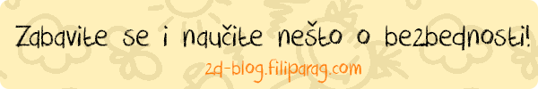

Programi za zaštitu od opasnosti i praćenje unosa
Programi za zaštitu od virusa, spajvera i drugog neželjenog softvera su od velikog značaja. Svaki dan loši ljudi
prave mnoštvo zaraza za vaš kompjuter, koje mogu da ozbiljno oštete računar.
Programi za Windows
OS Windows je jedna od najpopularnijih desktop platformi. Takođe je i jedna od najpogodnijih za viruse.
Postoje mnogi lažni programi koji "ubrzavaju" računar, ali su oni ustvari i najveći problemi.
Antivirus:
Najbolji besplatni antivirus za Windows je
avast!,
a najbolji plaćeni
Kaspersky. Ovi programi će
osigurati da vaš računar bude otporan na skoro sve viruse, melver, spajver i mogućnost blokiranja
neželjenih sajtova.
Programi za praćenje rada:
Ako niste sigurni šta vaše dete radi na računaru, ovi programi su jako zahvalni. Pored unosa sa tastature
mogu pratiti i dešavanja na ekranu.
Refog nudi program
koji morate kupiti posle probnog perioda da bi nastavio sa radom, ali ako vam je dovoljno da vidite samo
unose teksta možete preuzeti njihov besplatan softver.
Programi za Mac OS X
Mac je za razliku od Windows-a otporniji na viruse, pa nema ni toliko mnogo programa protiv njih.
Antivirus:
Preporučujemo vam besplatni program iz Nortona,
iAntivirus,
ali i plaćeni program
Kaspersky za Mac.
Programi za praćenje rada:
Kao i za Windows,
Refog je napravio program za praćenje
unosa i za Mac. Ako vam se svidi program na besplatnoj probi, preporučujemo da ga kupite.
Programi za GNU/Linux
Linux je možda na prvi pogled težak i nepopularan, ali to nije istina. Na ovoj platformi vam neće trebati
antivirus softver jer ne postoje virusi ni malver.
Programi za praćenje rada:
Postoji mnostvo programa za praćenje rada i unosa kao i na drugim platformama, ali
logkeys
je trenutno najbolji.
Programi za Android i iOS
Iako ove dve platforme izgledaju otporne na viruse, skoro na svakom telefonu/tabletu postoji neki vid
neželjenog softvera. Najčešće su to spajver i adver ali postoje i mnogi virusi. Aplikacije sa mnogo
reklama i erpuš ("airpush") notifikacija su adver i njih treba izbegavati i brisati sa telefona. Osim
što će vam "pojesti" bateriju, malver može da vam napravi telefonski račun i obriše podatke.
Antivirus:
avast! je besplatan Android antivirus koji ima mnogo opcija i dobru zaštitu od virusa.
Lookout
je trenutno najbolji plaćeni (i besplatni) antivirus za iOS i Android. Ima jako velik broj funkcija čak i dobru anti-lopovsku blokadu.
